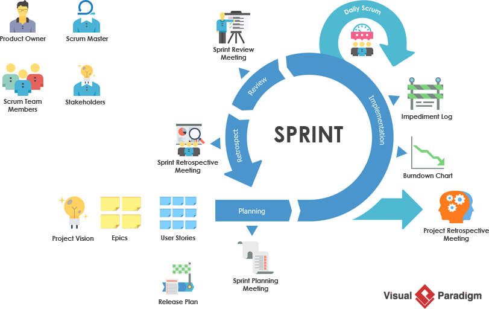

Scrum
Created by Ruslan Gvozd
Definition of Scrum
Agile => Scrum
The Characteristics of Scrum
• Lightweight
• Simple to understand
• Difficult to master
Why Scrum
Benefits of Scrum
- Better quality
- Reduced time to market
- Increase return on Investment
- Higher Team Morale
- Enhance Team Collaboration
Three pillars of Scrum
The Scrum Framework
The components of Scrum process
The main components of Scrum Framework are:
The scrum roles: Scrum Master, Scrum Product Owner and the Scrum Team
The artifacts: Sprint backlog, product backlog, burndown chart, log, etc…
Scrum events: Sprint planning, spring review, daily standup, sprint retro, etc…
Sprint
Sprint
The scrum roles
Product owner
Scrum master

Scrum team
Scrum artifacts
Product backlog
Spring backlog
Burn-down chart

Scrum Events
Sprint Planning
Daily Scrum Meeting
Sprint Review Meeting
Sprint Retrospective
The retrospective gives the team the opportunity to identify 3 key aspects:
- What should starting doing?
- What did not go well (and stop doing again)?
- What went well (and should keep doing?)?